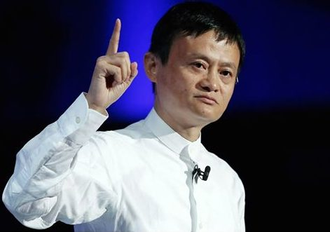

ဂျက်မားအကြောင်း
ဂျက်မား သို့ မားယွန် ( ၁၉၆၄ စက်တင်ဘာ ၁၀ မွေး) သည် တရုတ်စီးပွားရေးသမား သူဌေးတစ်ဦး ဖြစ်ပြီး ရင်းနှီးမြှုပ်နှံသူနှင့် ပရဟိတသမားတစ်ဦးလည်း ဖြစ်သည်။ သူသည် နိုင်ငံတကာ နည်းပညာ ကုမ္ပဏီအစုအဖွဲ့တစ်ခု ဖြစ်သော အလီဘာဘာ စီးပွားရေးလုပ်ငန်းစု ကို ပူးတွဲတည်ထောင်ခဲ့သူနှင့် ယခင် အမှုဆောင် ဥက္ကဋ္ဌ လည်း ဖြစ်သည်။
ဂျက်မားသည် တရုတ် စီးပွားရေးလုပ်ငန်းများအတွက် နိုင်ငံတကာ သံတမန် တစ်ဦးဖြစ်ပြီး ကမ္ဘာတွင် ဩဇာအရှိဆုံး ပုဂ္ဂိုလ်များစာရင်းတွင် မကြာခဏ ထည့်သွင်းဖော်ပြခြင်း ခံရကာ ဖော်ဘီမဂ္ဂဇင်းမှ သူ့အား ကမ္ဘာ့ဩဇာအရှိဆုံးပုဂ္ဂိုလ်စာရင်းတွင် အဆင့် ၂၁ နေရာ၌ ဖော်ပြခဲ့သည်။[၂] သူသည် ကနဦး စီးပွားရေး လုပ်ငန်းငယ်များအတွက် စံပြပုဂ္ဂိုလ်တစ်ဦးလည်း ဖြစ်သည်။[၃]၂၀၁၇ ခုနှစ်တွင် ဂျက်မားအား ဖော်ကျွန်းမဂ္ဂဇင်းမှ ကမ္ဘာ့ အကြီးကျယ်ဆုံးခေါင်းဆောင် ၅၀ စာရင်း တွင် ဒုတိယနေရာ၌ ဖော်ပြခဲ့သည်။[၄]၂၀၁၈ ခုနှစ် စက်တင်ဘာလတွင် သူသည် အလီဘာဘာမှ အနားယူပြီး ပညာရေးလုပ်ငန်းများ၊ ပရဟိတလုပ်ငန်းများ နှင့် သဘာဝပတ်ဝန်းကျင်ဆိုင်ရာ လုပ်ငန်းများကိုသာ ဆက်လက်ဆောင်ရွက်တော့မည်ဟု ကြေညာခဲ့ပြီး [၅][၆][၇][၈]နောက်တစ်နှစ်တွင် ဒယ်နီယယ် ကျန်းမှ ဂုဏ်ထူးဆောင် ဥက္ကဋ္ဌနေရာကို ဆက်ခံခဲ့သည်။[၉]
၂၀၂၀ ဇူလိုင်လတွင် သူ၏ ကြွယ်ဝမှုသည် အမေရိကန်ဒေါ်လာ ၄၈.၂ ဘီလီယံ ရှိသဖြင့် တရုတ်နိုင်ငံတွင် မား ဟွာတန် ပြီးလျှင် ဒုတိယမြောက် အချမ်းသာဆုံး ဖြစ်ပြီး ဖော်ဘီမဂ္ဂဇင်း၏ ကမ္ဘာ့အချမ်းသာဆုံး စာရင်းတွင်လည်း နံပါတ် ၂၀ တွင် ပါဝင်ခဲ့သည်။[၁၀] ၂၀၁၉ တွင် ဖော်ဘီမှ ဂျက်မားအား အာရှ၏ ၂၀၁၉ ခုနှစ် ပရဟိတ သူရဲကောင်းများ စာရင်းတွင် ထည့်သွင်းခဲ့ပြီး တရုတ်၊ အာဖရိက၊ ဩစတြေးလျ နှင့် အရှေ့အလယ်ပိုင်းတို့ရှိ ဖွံ့ဖြိုးစဲ လူ့အဖွဲ့အစည်းများကို ကူညီထောက်ပံ့ပေးခဲ့သော သူ၏ လုပ်ငန်းများကြောင့် ဖြစ်သည်။[၅][၁၁]

"ဂျက်မားရဲ့ဘဝ အခက်ခဲတွေကြား ဘယ်လို အောင်မြင်လာလဲ

ဂျက်မားသည် ဆင်းရဲသောနောက်ခံနှင့် အကြိမ်ကြိမ်ကျရှုံးမှုများ (တက္ကသိုလ်ဝင်ခွင့် ၃ ကြိမ်၊ ဟားဗတ် ၁၀ ကြိမ်) ကြားမှ မလျှော့သောဇွဲ၊ အခြားသူများ၏ အခက်အခဲများမှ သင်ယူခြင်းနှင့် အလီဘာဘာ (Alibaba) ကို တည်ထောင်ကာ အင်တာနက်နည်းပညာဖြင့် လူနေမှုဘဝကို ပြောင်းလဲပေးနိုင်ခြင်းတို့ကြောင့် ကမ္ဘာ့ထိပ်တန်းသူဌေးကြီးတစ်ဦး ဖြစ်လာခဲ့သည်။
Radio Veritas Asia
Radio Veritas Asia
+1
ဇွဲနှင့် အရှုံးမပေးခြင်း: တက္ကသိုလ်ဝင်ခွင့်နှင့် အလုပ်အကိုင်များတွင် အကြိမ်ကြိမ်ငြင်းပယ်ခံရသော်လည်း အလျှော့မပေးဘဲ ဆက်လက်ကြိုးစားခဲ့သည်။
အခွင့်အလမ်းကို မြင်ခြင်း: အင်တာနက်နည်းပညာ အစောပိုင်းကာလတွင် အလားအလာကိုမြင်ပြီး တရုတ်နိုင်ငံရှိ အသေးစားနှင့် အလတ်စားလုပ်ငန်းများ (SMEs) ကို ကမ္ဘာနှင့်ချိတ်ဆက်ပေးနိုင်မည့် Alibaba ကို တည်ထောင်ခဲ့သည်။
ရှုံးနိမ့်မှုကို သင်ခန်းစာယူခြင်း: အခြားသူများ၏ အမှားများနှင့် မိမိ၏ကျရှုံးမှုများကို သင်ယူပြီး အနာဂတ်အတွက် ပြင်ဆင်ခဲ့သည်။
အမြင်သစ်ဖြင့် ကြည့်ခြင်း: သူ၏စကားအရ "အခက်အခဲရှိသည့်နေရာတွင် အခွင့်အလမ်းရှိသည်" ဟူသော ခံယူချက်ဖြင့် ပြဿနာများကို ဖြေရှင်းခဲ့သည်။
Facebook
Facebook